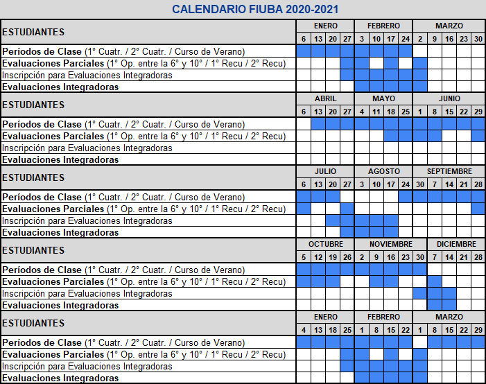

1
Hasta el viernes 27/3
Si todavía no la tenés, solicitá tu cuenta de mail @fi.uba.ar accediendo al formulario.
La cuenta institucional es una cuenta especial de google que te permitirá tener acceso a diversas herramientas que te van a ayudar a compartir material con tus profesores, compañeros y compañeras. Además, te va a permitir aprovechar una gran capacidad de almacenamiento gratuito disponible para guardar todo el material que creas pertinente para desarrollar tu cursada.
Llená el formulario de solicitud2
Hasta el domingo 29/3
Una vez activada tu cuenta fiuba, registrala en tu perfil del campus.
Para realizar esta acción:
3
Del lunes 30/3 al viernes 3/4
Cada docente deberá matricularte y ponerse en contacto con vos mediante el campus o tu cuenta de mail fiuba.
Paulatinamente, a lo largo de la semana, se te irán confirmando cada una de las matriculaciones a los cursos del campus.
4
Del lunes 6/4 al viernes 10/4
Durante esta semana, se realizarán los cambios de cursos solicitados y la asignacion de condicionales. Es importante que estés atento a tu caso según te corresponda.
Los tramites se realizarán vía campus y distintos medios que iremos publicando en esta sección.
5
Lunes 13/4
Se dará inicio a la cursada; las clases deberán entenderse como clases de modalidad a distancia que se empalmarán con la modalidad presencial según las circunstancias lo permitan.
Los docentes recurrirán a diversar herramientas de comunicación a distancia para llevar adelante sus cursadas. Cada materia, o curso, comunicará la modalidad a traves de sus respectivas páginas del Campus.
Debido a la postergación en el inicio de clases, la facultad elaboró un nuevo calendario académico.
Con el objetivo de mitigar los posibles inconvenientes generados por esta crisis, la facultad elaboró dos medidas para todos los estudiantes.
Se prorrogan por un período el vencimiento de las cursadas correspondientes al segundo cuatrimestre de 2018, primer y segundo cuatrimestre de 2019
Se estableció como requisito para cursar asignaturas en el segundo cuatrimestre de 2020, cumplir con los requisitos establecidos para rendir la evaluación integradora de las asignaturas correlativas.
Aprovechá el chat en vivo con el Centro de Estudiantes de Ingeniería "La Linea Recta", con quienes venimos trabajando este tipo de medidas y van a poder ayudarte con los inconvenientes relacionados a esta etapa.